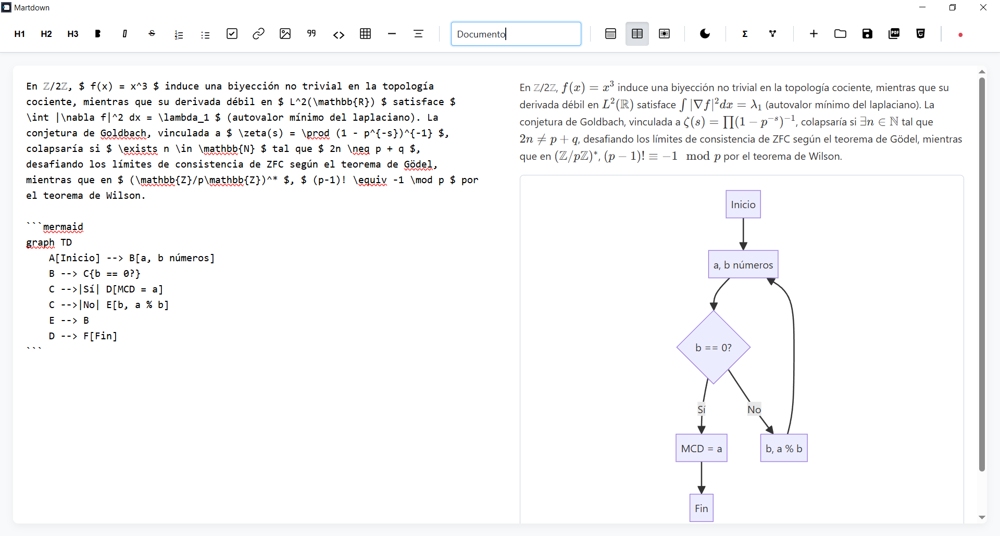

Características Principales
Previsualización en Vivo
Visualización instantánea de los cambios mientras escribes.
Barra de Herramientas
Acceso rápido para formatear texto (encabezados, negritas, listas, etc.).
Soporte TeX (KaTeX)
Renderizado de fórmulas matemáticas en línea ($...$) y en bloque ($$...$$).
Panel de Funciones Matemáticas
Panel de acceso rápido a cientos de símbolos y comandos TeX.
Creación de Diagramas (Mermaid)
Genera diagramas de flujo, secuencia, gantt, mapas mentales y más.
Temas Claro y Oscuro
Modos de visualización para adaptarse a tu entorno y reducir la fatiga visual.
Gestión de Archivos
Permite crear, abrir y guardar archivos en formato .md de forma sencilla.
Exportación Múltiple
Exporta tus documentos a formato PDF y HTML con un solo clic.